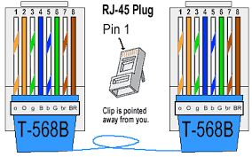

Componentes activos descripciones
Descripción técnica de cada componente activos con su respectiva imagen

Switch
Un switch es un dispositivo de red que conecta múltiples dispositivos en una red local (LAN) y utiliza direcciones MAC para enviar datos únicamente al dispositivo correcto.

Router
Un router es un dispositivo de red que dirige el tráfico de datos entre diferentes redes, típicamente entre una red local (LAN) y una red externa, como Internet.

Tarjeta de Red
Una tarjeta de red, también conocida como NIC (Network Interface Card), es un componente de hardware que permite a una computadora conectarse a una red.